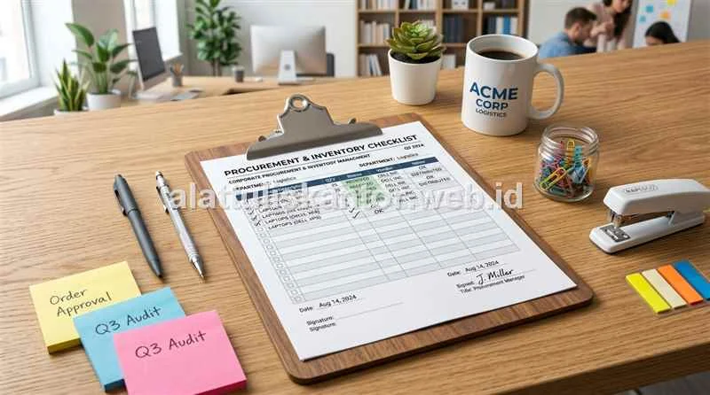

Salah satu tugas rutin staf General Affair (GA) yang paling sering menyita waktu adalah menyusun kebutuhan pengadaan alat tulis kantor setiap bulan, ditambah beban administrasi klaim nota pembelian yang masih dilakukan secara manual. Tanpa checklist yang terstruktur, staf GA sering kali membeli barang berdasarkan perkiraan kasar atau menunggu laporan kehabisan stok dari masing-masing divisi, yang berujung pada pembelian mendadak dengan harga eceran yang kurang optimal.
Sebagai supplier pengadaan-atk yang membantu berbagai perusahaan menyusun kebutuhan ATK bulanan secara terstruktur, kami menyediakan panduan checklist kebutuhan ATK bulanan berdasarkan jumlah karyawan, estimasi anggaran per skala kantor, sekaligus tips menyederhanakan proses administrasi pembeliannya.
1. Bagaimana Cara Menghitung Kebutuhan ATK Bulanan Berdasarkan Jumlah Karyawan?
Kebutuhan ATK bulanan kantor dapat dihitung dengan rumus dasar: Jumlah Karyawan × Standar Konsumsi per Kategori Produk, ditambah cadangan aman 10–15% untuk mengantisipasi kebutuhan tak terduga seperti rapat dadakan, audit eksternal, atau kunjungan klien.
Standar konsumsi ini bervariasi tergantung jenis pekerjaan—divisi yang banyak berurusan dengan dokumen fisik (seperti bagian keuangan, pajak, legal, atau operasional logistik) tentu membutuhkan lebih banyak kertas HVS dan alat tulis dibanding divisi pengembang teknologi yang mayoritas alur kerjanya berbasis digital.
Formula Estimasi Budget GA: Total Anggaran Bulanan = (Σ Karyawan × Biaya Kuota ATK/Orang) + Alokasi Kertas & Toner Bersama + Cadangan 15%. Menghitung dengan basis data historis mencegah pembengkakan kas kecil (*petty cash*).
2. Checklist Kebutuhan ATK Bulanan Berdasarkan Skala Kantor
Berikut adalah rincian checklist inventaris alat tulis kantor yang disesuaikan dengan kapasitas karyawan:
A. Kantor Kecil (10 - 25 Karyawan)
- Kertas HVS A4 & F4: 3 – 5 rim per bulan.
- Pulpen & Pensil: 1 pcs per karyawan per bulan.
- Stapler dan Isi Staples: 1 set per 10 karyawan.
- Map dan Folder Arsip: 10 – 15 pcs per bulan (stopmap, snelhechter).
- Perlengkapan Rapat: Sticky notes neon dan spidol whiteboard sesuai kebutuhan rapat rutin.
B. Kantor Menengah (26 - 75 Karyawan)
- Kertas HVS A4 & F4: 8 – 15 rim per bulan.
- Pulpen dan Alat Tulis Pendukung: 1 – 2 pcs per karyawan per bulan (dilengkapi refill tinta & correction tape).
- Toner / Tinta Printer: Sesuai volume cetak masing-masing divisi operasional.
- Map, Ordner, dan Kelengkapan Arsip: 30 – 50 pcs per bulan.
- Perlengkapan Meeting Room: Spidol whiteboard aneka warna, penghapus papan tulis, dan kertas flipchart.
C. Kantor Besar (76 - 150+ Karyawan)
- Kertas HVS Grosir: 20 – 40 rim per bulan (tergantung intensitas transaksi dokumen fisik).
- Alat Tulis & Meja Kerja: Disesuaikan per divisi dengan standar konsumsi yang terukur.
- Toner / Cartridge Printer Skala Besar: Kontrak suplai berkala dengan distributor resmi.
- Perlengkapan Arsip Skala Besar: Ordner tebal 7 cm, box arsip dokumen tahunan, dan label folder.
- Stok Cadangan Darurat: Kuota ekstra untuk kebutuhan audit kepatuhan atau kunjungan auditor eksternal.
3. Tabel Estimasi Anggaran ATK Bulanan Berdasarkan Jumlah Karyawan
Berikut adalah acuan estimasi anggaran bulanan pengadaan alat tulis kantor yang sehat dan terukur:
| Skala Kantor | Jumlah Karyawan | Estimasi Anggaran ATK / Bulan |
|---|---|---|
| Kantor Kecil | 10 – 25 orang | Rp 1.500.000 – Rp 3.000.000 |
| Kantor Menengah | 26 – 75 orang | Rp 4.000.000 – Rp 8.500.000 |
| Kantor Besar | 76 – 150+ orang | Rp 9.000.000 – Rp 18.000.000+ |
*Catatan: Estimasi anggaran bersifat umum dan dapat bervariasi tergantung jenis industri, intensitas penggunaan dokumen fisik, serta kebijakan penghematan internal masing-masing korporasi.
4. Cara Menyederhanakan Administrasi Klaim Nota Pembelian ATK
Selain menyusun kebutuhan bulanan, keluhan lain yang sering muncul dari staf GA adalah rumitnya proses klaim nota pembelian yang masih dilakukan manual, terutama bila pembelian dilakukan di banyak toko retail terpisah dalam satu bulan. Berikut 4 langkah menyederhanakannya:
- Konsolidasikan Pembelian ke Satu Distributor Tetap: Dengan memusatkan pengadaan pada satu vendor resmi, bagian keuangan hanya perlu memproses 1 invoice konsolidasi per periode, bukan puluhan nota tercecer dari berbagai toko eceran.
- Gunakan Sistem Standing Order: Daftarkan kebutuhan barang rutin ke dalam sistem pemesanan terjadwal, sehingga staf GA cukup melakukan konfirmasi ulang kuota setiap bulan tanpa harus membuat daftar dari nol.
- Minta Rekap Laporan Bulanan Resmi: Distributor B2B terpercaya menyediakan rekapitulasi data pembelian otomatis ber-NPWP yang dapat langsung dilampirkan ke laporan pertanggungjawaban keuangan perusahaan.
- Digitalisasi Alur Approval Pengadaan: Terapkan persetujuan berbasis email atau form digital sederhana agar staf GA tidak perlu membuang waktu meminta tanda tangan fisik berulang kali untuk setiap nota pembelian kecil.
5. Manfaat Memiliki Checklist ATK Bulanan yang Terstruktur
- Mengurangi Pembelian Mendadak dengan Harga Mahal: Pengadaan terencana memungkinkan perusahaan memanfaatkan potongan harga grosir distributor resmi.
- Mempermudah Proses Budgeting Tahunan: Data konsumsi bulanan yang rapi menjadi fondasi akurat dalam merancang proyeksi rencana kerja anggaran perusahaan (RKAP) tahun depan.
- Meminimalkan Risiko Kehabisan Stok Genting: Barang-barang vital yang sering luput (seperti pita printer kasir, isi staples, lakban) selalu terpantau jumlah sisanya.
- Mempercepat Proses Audit Internal: Seluruh riwayat mutasi barang memiliki bukti transaksi yang runtut dan mudah ditelusuri (*audit trail*).
6. Kesalahan Umum dalam Menyusun Kebutuhan ATK Bulanan
Hindari beberapa kekeliruan yang kerap membuat biaya ATK kantor membengkak tanpa disadari:
- Menghitung Berdasarkan Tebakan Kasar Tanpa Data Historis: Hal ini mengakibatkan sebagian barang menumpuk hingga kedaluwarsa, sementara barang penting lainnya sering kosong.
- Tidak Melibatkan Perwakilan Setiap Divisi: Staf GA sering tidak menyadari bahwa divisi tertentu membutuhkan spesifikasi khusus (misal: kertas kalkir untuk tim teknik atau ordner ekstra untuk tim pajak).
- Mengabaikan Tren Musiman: Tidak mengantisipasi lonjakan konsumsi kertas dan map saat periode penutupan buku tahunan (*year-end closing*) atau rekrutmen massal.
Studi Kasus: Efisiensi Waktu Administrasi Setelah Konsolidasi Vendor
Salah satu klien kami, sebuah perusahaan distribusi consumer goods di Jawa Timur dengan 60 karyawan, sebelumnya menghabiskan hampir 2 hari kerja penuh setiap bulan hanya untuk merekap nota pembelian ATK dari 8 toko eceran berbeda yang digunakan oleh divisi operasionalnya.
Setelah beralih ke sistem standing order dengan satu distributor resmi kami dan menerima rekap laporan bulanan terintegrasi, waktu yang dibutuhkan untuk proses administrasi ini berkurang drastis menjadi kurang dari 2 jam per bulan. Staf GA hanya perlu memverifikasi satu laporan konsolidasi alih-alih mengumpulkan puluhan struk manual.
Untuk melihat katalog lengkap produk perlengkapan kantor yang tersedia untuk kebutuhan rutin bulanan perusahaan Anda, silakan kunjungi halaman katalog produk kami.